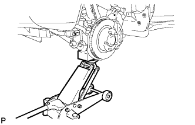
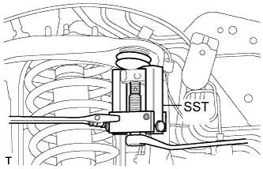

FRONT UPPER SUSPENSION ARM > REMOVAL |
| 1. REMOVE STABILIZER CONTROL VALVE PROTECTOR (w/ KDSS) |
 |
Detach the clamp, and disconnect the connector from the protector.
Remove the 3 bolts and protector.
| 2. OPEN STABILIZER CONTROL WITH ACCUMULATOR HOUSING SHUTTER VALVE (w/ KDSS) |
Using a 5 mm hexagon socket wrench, loosen the lower and upper chamber shutter valves of the stabilizer control with accumulator housing 2.0 to 3.5 turns.

| 3. REMOVE FRONT WHEEL |
| 4. REMOVE FRONT HEIGHT CONTROL SENSOR SUB-ASSEMBLY LH (w/ Active Height Control) |
 |
Disconnect the connector.
Remove the nut, bolt and sensor.
| 5. DISCONNECT SKID CONTROL SENSOR WIRE |
 |
Remove the bolt and nut, and disconnect the sensor wire from the steering knuckle and suspension upper arm.
| 6. DISCONNECT STEERING KNUCKLE LH |
 |
Support the front suspension lower arm LH with a jack.
Remove the clip and the nut.
 |
Using SST, disconnect the upper ball joint from the steering knuckle.
| 7. REMOVE FRONT FENDER APRON SEAL LH (w/ KDSS) |
 |
Using a clip remover, remove the 3 clips and apron seal.
| 8. REMOVE FRONT FENDER APRON SEAL LH (w/o KDSS) |
 |
Using a clip remover, remove the 4 clips and apron seal.
| 9. REMOVE FRONT FENDER APRON SEAL REAR LH |
 |
Using a clip remover, remove the 4 clips and apron seal.
| 10. REMOVE FRONT SUSPENSION UPPER ARM ASSEMBLY |
 |
Remove the nut, bolt, 2 washers and suspension upper arm.